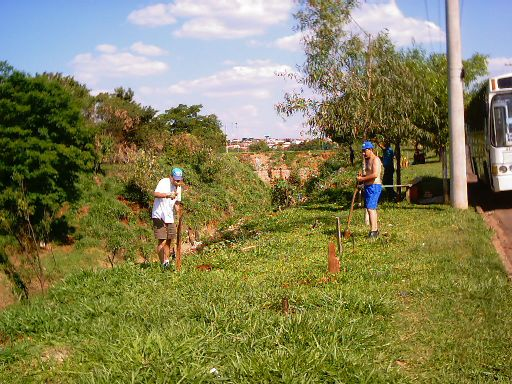

Mais um
Domingo de plantio!
Este plantio foi feito no bairro Botafogo a pedido de mais dois de nossos colaboradores,
"Polegada" e Marquinhos, que nos ajudaram no plantio de 23 mudas,
plantadas às margens da Lagoa do Medeiros.
Veja as fotos:
|
O local do
plantio é íngreme, o que difucultou um pouco o nosso trabalho.
Mesmo assim, as 23 mudas foram plantadas! |
|
Alexandre planta,
às margens do córrego, uma muda de Abacate.
O barranco teve que ser vencido para o plantio da muda! |
|  |
| As
árvores darão um novo visual e devolverão a mata ciliar ao córrego do Medeiros. |
|
Ao
fim do plantio, nossos dois colaboradores descançam
e posam para uma foto.
Da direita para esquerda, "Polegada" e Marquinhos. |
Este plantio foi muito importante
pois plantamos 23 mudas em um local
onde, além de não haver mais a mata ciliar, ainda era um local de despejo de
entulho.
As árvores trarão de volta o Mini Ecossistema do córrego do Medeiros!
Agora, nos meses de chuva, o Projeto Plante a Vida volta com força total!
Ajude-nos! Faça sua
parte!
Plante a Vida!
|